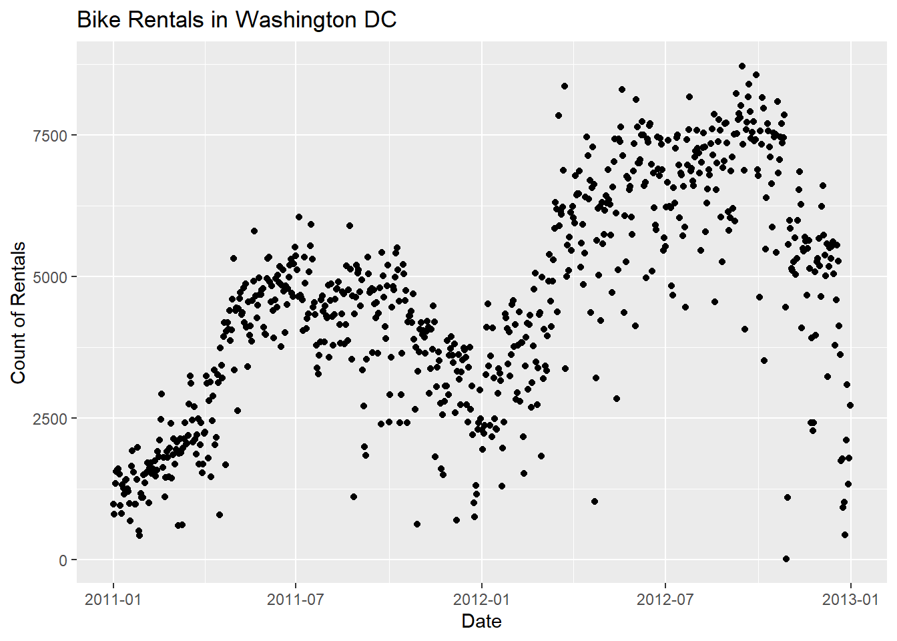
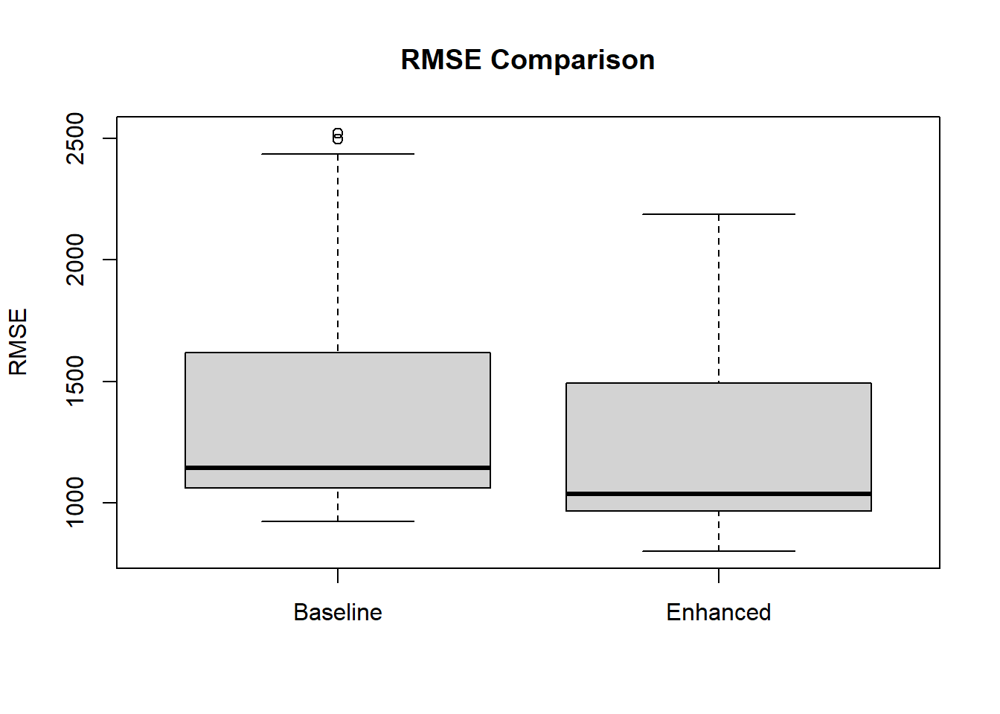
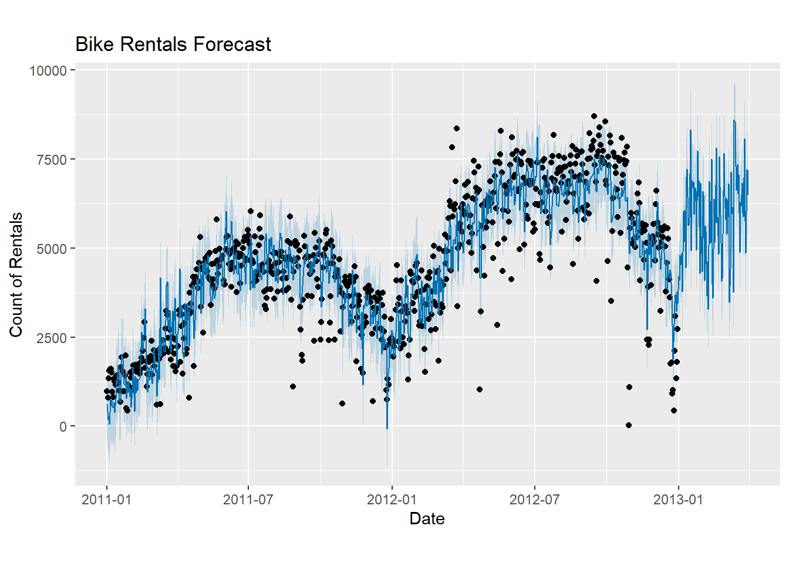

data <- read_csv("day.csv")WGU MSDA D214 Task 1 Capstone
Research Question
A. In this assessment I will be creating a time series model using Meta’s prophet. I am interested in exploring the extent to which temperature, humidity, and US holidays have the forecasting accuracy of bike rentals for the Washington DC based bike share company, Capital Bikeshare. In other words I want to find out if including these external variables has a significant impact on the models ability to accurately predict daily bike rentals.
Accurate forecasting is essential in an industry like bike sharing. According to Fanaee-T (2013), there are over 500 bike sharing programs around the world with over 500,000 bikes! Capital Bikeshare relies on accurate demand forecasting to optimize availability since Washington DC is the 12th most visited city in the country with an estimated 25.95 million tourists visiting in 2023 alone (RoadGenius, 2024). Understanding the rental patterns and if they are significantly affected by the weather, time of year, or events, can help the company allocate bikes efficiently.
The null hypothesis (H₀) is that adding temperature, humidity, and US holidays do not statistically significantly affect the forecasting accuracy of bike share rentals in Washington DC. The alternative hypothesis (H₁) is that temperature, humidity, and US holidays to statistically significantly affect he forecasting accuracy of the bike rentals.
Data Collection
B. The data used for this analysis was collected from the publicly accessible UCI Machine Learning Repository. However, Fanaee-T (2013), mentions in the data’s readme file that the data was compiled from 2 years of bike share data, publicly available at capitalbikeshare.com, and weather data collected from freemeteo.com
Using data from a trusted source like UCI’s Machine Learning Repository has several benefits. One big advantage is that the data is already cleaned and ready to use. Since it’s real-world data, it also shows natural patterns, like people renting less in the winter, which makes it more realistic and useful for analysis.
However, a major downside is that the data set doesn’t include any financial information. While it is possible to use the rental counts and dates to build a time series model to predict usage over the year, I can’t analyze weather rental prices change during the busy season or slow season. This information could potentially help to explain more of the variance in the data and help the company better understand the rental behavior.
Data Extraction and Preparation
C. The extraction and preparation process what handled in R using tidyverse, lubridate, and prophet libraries. I read the data using read_csv() from tidyverse.
Rows: 731
Columns: 16
$ instant <dbl> 1, 2, 3, 4, 5, 6, 7, 8, 9, 10, 11, 12, 13, 14, 15, 16, 17, …
$ dteday <date> 2011-01-01, 2011-01-02, 2011-01-03, 2011-01-04, 2011-01-05…
$ season <dbl> 1, 1, 1, 1, 1, 1, 1, 1, 1, 1, 1, 1, 1, 1, 1, 1, 1, 1, 1, 1,…
$ yr <dbl> 0, 0, 0, 0, 0, 0, 0, 0, 0, 0, 0, 0, 0, 0, 0, 0, 0, 0, 0, 0,…
$ mnth <dbl> 1, 1, 1, 1, 1, 1, 1, 1, 1, 1, 1, 1, 1, 1, 1, 1, 1, 1, 1, 1,…
$ holiday <dbl> 0, 0, 0, 0, 0, 0, 0, 0, 0, 0, 0, 0, 0, 0, 0, 0, 1, 0, 0, 0,…
$ weekday <dbl> 6, 0, 1, 2, 3, 4, 5, 6, 0, 1, 2, 3, 4, 5, 6, 0, 1, 2, 3, 4,…
$ workingday <dbl> 0, 0, 1, 1, 1, 1, 1, 0, 0, 1, 1, 1, 1, 1, 0, 0, 0, 1, 1, 1,…
$ weathersit <dbl> 2, 2, 1, 1, 1, 1, 2, 2, 1, 1, 2, 1, 1, 1, 2, 1, 2, 2, 2, 2,…
$ temp <dbl> 0.3441670, 0.3634780, 0.1963640, 0.2000000, 0.2269570, 0.20…
$ atemp <dbl> 0.3636250, 0.3537390, 0.1894050, 0.2121220, 0.2292700, 0.23…
$ hum <dbl> 0.805833, 0.696087, 0.437273, 0.590435, 0.436957, 0.518261,…
$ windspeed <dbl> 0.1604460, 0.2485390, 0.2483090, 0.1602960, 0.1869000, 0.08…
$ casual <dbl> 331, 131, 120, 108, 82, 88, 148, 68, 54, 41, 43, 25, 38, 54…
$ registered <dbl> 654, 670, 1229, 1454, 1518, 1518, 1362, 891, 768, 1280, 122…
$ cnt <dbl> 985, 801, 1349, 1562, 1600, 1606, 1510, 959, 822, 1321, 126…When I plot the count of rentals by day we can see, at first glance, that there appeares to be an upward trend and there are some clear trends and seasonality. Rentals in winter months are consistently low and consistently high in summer months.

To ensure that the date is in the correct format I used ymd() from the lubridtate package.
data$dteday <- ymd(data$dteday)According to the Prophet documentation page “the input to prophet is always a dataframe with two columns: ds and y.” (Facebook, n.d. - a) So I created a dataframe with the dteday (date) column as ds, cnt (rental count) as y. I also added the regressors temp (temperature) and hum (humidity).
df <- data.frame(
ds = data$dteday, #Date
y = data$cnt, #Rental count
temp = data$temp, #Temperature
hum = data$hum #Humidity
)To test my hypothesis that the regressors temp and hum statistically significantly affect the model’s performance I need to create two models; A base model that includes date and rental count, and an enhanced model that also includes the temperature and humidity regressors.
# Build Baseline Model (without holidays, temp, hum)
df_base <- df[, c("ds", "y")] # only date and y
#creating the untrained prophet model for the base model
m_base <- prophet()
#training/fitting the prophet model based on the df_base model.
m_base <- fit.prophet(m_base, df_base)
# building the enhanced model (with holidays, temp, hum)
m_enhanced <- prophet() #creatign a prophet model for the enhanced model
m_enhanced <- add_country_holidays(m_enhanced, country_name = 'US') #adding holidays
m_enhanced <- add_regressor(m_enhanced, 'temp') #adding temperature
m_enhanced <- add_regressor(m_enhanced, 'hum') #adding humidity
m_enhanced <- fit.prophet(m_enhanced, df) #fitting the prophet model to the encahnged modelMeta’s prophet model was designed to be used on time series data and can easily incorporate the effects of the US holidays (Crunching the Data, 2022) that are included in the dataset. Lubridate simplifies the date formats that are essential in time series models. Using prophet allows me to incorporate external regressors like temperatrue and humidity as well as including US holidays. These are essential for testing my hypothesis.
One major advantage to using the prophet model is having the ability to easily incorporate these external regressors and US holidays to make it easier to test their impact without having to build complex models from scratch. In contrast a disadvantage of using prophet with this data is that prophet needs historical and future values as stated in the Meta prophet documentation page, “The extra regressor must be known for both the history and for future dates. It thus must either be something that has known future values (such as nfl_sunday), or something that has separately been forecasted elsewhere.” (Facebook, n.d. -b). This means that I need to account for the winter data that will be forecasted.
To do this I took a random sample of the January, February, and March data to add 90 days of simulated temperature and humidity data to the future dataframe that will be used for prophet forecasting. This provides realistic values for the regressors during the time period that is being forecasted.
# Forecast plot from Enhanced Model
future <- make_future_dataframe(m_enhanced, periods = 90)
# Sampling from Jan–Mar historical data since that is what is being forecasted
winter_data <- data %>% filter(month(dteday) %in% c(1, 2, 3))
# Add temp and hum to future
future$temp <- c(df$temp, runif(90, min(winter_data$temp), max(winter_data$temp)))
future$hum <- c(df$hum, runif(90, min(winter_data$hum), max(winter_data$hum)))Analysis
D. This analysis was performed using Meta’s prophet time series model. I created two models, a baseline model (m_base) and an enhanced model (m_enhanced). I used cross validation to assess each model’s predictive accuracy over a 90 day forecast (horizon = 90). The training window started with 540 days of data (initial = 540), and new forecast folds were generated every 30 days (period = 30). Initially I tried different periods (30, 90, and 120) and found that period = 30 had the most significant p-value.
# Cross-validation for both models
cv_enhanced <- cross_validation(m_enhanced,
initial = 540,
period = 30,
horizon = 90,
units = "days")
cv_base <- cross_validation(m_base,
initial = 540,
period = 30,
horizon = 90,
units = "days")I use the performance_metrics() function to get the RMSE (Root Mean Square Error) values for both the baseline and enhanced models after cross-validation. Since both models were evaluated on the same cross-validation folds as mentioned previously, each RMSE value from the base model corresponds directly to an RMSE value from the enhanced model on the same data segment. I then compared the RMSE from each model using a pared t-test to determine if the differences in the model performance are statistically significant.
# Performance metrics
perf_enhanced <- performance_metrics(cv_enhanced)
perf_base <- performance_metrics(cv_base)The results of the t-test show a t value of 16.101, 81 degrees of freedom, and a p-value of 2.2e-16, which is far below the standard significance level of 0.05. The mean difference in the RMSE values is 131.6176 meaning that the enhanced model had lower RMSE values on average across all cross validation folds. This means that the enhanced model performs statistically significantly better than the base model. In other words, adding US holidays and the temperature and humidity regressors, does impact the accuracy of the time series model.
Paired t-test
data: perf_base$rmse and perf_enhanced$rmse
t = 16.101, df = 81, p-value < 2.2e-16
alternative hypothesis: true mean difference is not equal to 0
95 percent confidence interval:
115.3527 147.8825
sample estimates:
mean difference
131.6176 The box-plot below further illustrates the improved performance of the enhanced model through visibly lower RMSE values:

The following component plot shows several patterns found in the data. First, the data has a clear upward trend overtime. We can also see that holidays have an impact on the specific times during the year. Specifically around December 2012 and 2013 when we can see a large dip indicating that a holiday around December has a negative impact on the data for that day. The weekly seasonality suggest that bike rental demand increases from Sunday to Friday and then slightly dips down, with the busiest day of the week being Friday. This is helpful in identifying weekday or weekend effects on the rental demand. Yearly seasonality shows that January is consistently low with the peaks happening in April, May and October. The extra regressors component shows that the temperature and humidity regressors did have a meaningful impact on the daily rentals through out the years.

Finally, the 90 day forecast plot using the enhanced model reflects the learned trend and seasonality patterns found in the data. The model’s predicted values also appear to align closely with the observed rental behaviors in prior years at the same times.

Data Summary and Implications
E. The results of this analysis suggest that incorporating external variables like temperature, humidity, and US holidays, has a statistically significant effect on the forecasting accuracy of daily bike rentals in Washington DC. Specifically. the enhanced model that included these regressors showed a lower RMSE as compared to the base model that excluded them. The difference in performance was determined by using a paired t-test, which indicated that the improvement in forecasting accuracy in the enhanced model was statistically significant. The findings support he alternative hypothesis that these regressors do in fact have a meaningful contribution to the predictive power of the model.
One limitation to the analysis is the way future temperature and humidity needed to be handled while using Meta’s prophet model. For the 90 day forecast, random values from winter months had to be generated based on the January through March historical data. Because these values are simulated values, they do not reflect the real world weather condition and could limit the usefullness of the forecasted data. Despite this limitation, the results of this analysis strongly suggest including the temperature and humidity when forecasting bike rental demand for this area.
Based on these finding, Capital Bikeshare should integrate weather forecasts and even holiday calendars into their inventory allocation strategies. Doing so could help to ensure that bikes are distributed more efficiently and that demand is being met throughout the year, particularly on holidays, and in times when the weather is extreme. For future studies incorporating real weather forecasts could improve the accuracy of the predictions. Additionally, adding other variables like air quality index, special events, and even traffic data could enhance the model further.
F. Sources
Fanaee-T, H. (2013). Bike Sharing Dataset. UCI Machine Learning Repository. https://archive.ics.uci.edu/ml/datasets/Bike+Sharing+Dataset
Crunching the Data. (2022). Prophet Forecasting Model Guide. https://www.crunchingthedata.com
Facebook. (n.d. - a). Quick start. Prophet Documentation. https://facebook.github.io/prophet/docs/quick_start.html
Facebook. (n.d. - b). Seasonality, Holiday Effects, And Regressors, Prophet Documentation. https://facebook.github.io/prophet/docs/seasonality%2C_holiday_effects%2C_and_regressors.html
RoadGenius. (2024). Top 20 Most Visited Cities in the U.S. https://roadgenius.com/most-visited-cities-us/